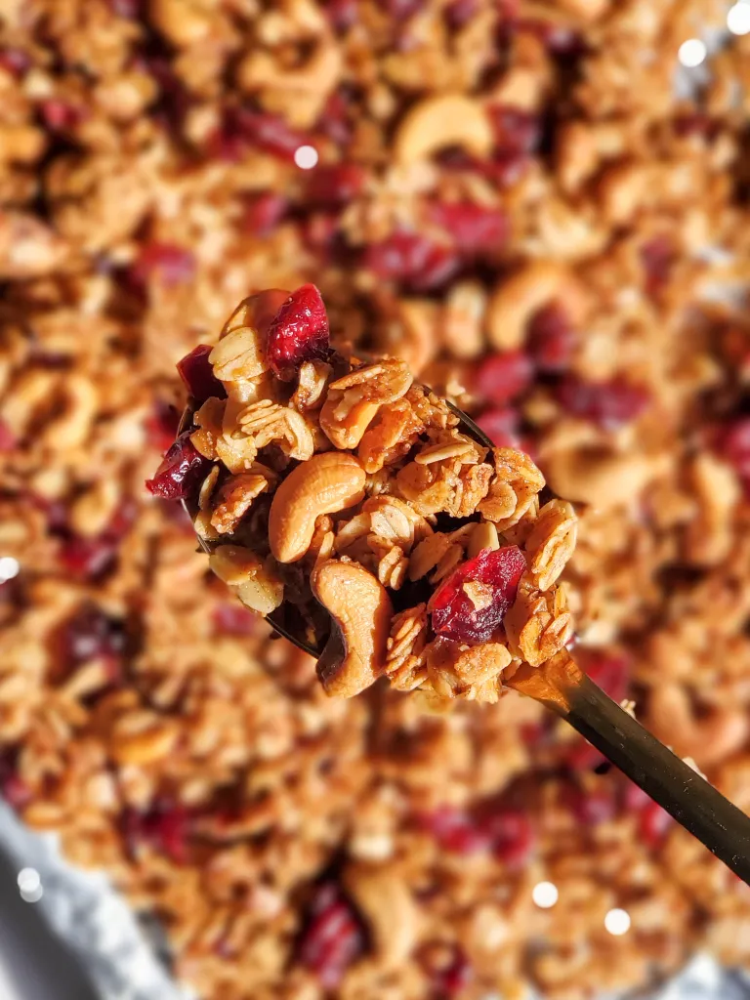

My Homemade Granola Recipe

Description
This is my personal recipe, which as overcome a lot of trial and error. I've got it to a point where it's pretty good now!
Ingredients
- 4 cups granola
- 4 cups puffed rice cereal
- 2 cups maple syrup (or your choice of sweetener)
- 1/4 cup coconut oil
- 1 to 2 cups crushed almonds/walnuts/pecans/whatever you like
- cinnamon
- 1/4-1/2 teaspoon vanilla extract
- sea salt
- dried cranberries (I like sweetened ones) or fruit of choice
Steps
- Preheat oven to 325°.
- Add oatmeal, puffed rice, and nuts to a large mixing bowl.
- In a small saucepan, heat coconut oil, maple syrup, and vanilla extract.
- Add wet ingredients to dry ingredients. Mix thoroughly until moist.
- Add salt to taste and generous amount of cinnamon. Mix and add more, if you want.
- Spread evenly onto a large baking sheet.
- Cook for 21 minutes then stir/mix and cook for another 21 minutes or until brown and no longer moist.
- Take out of oven and let cool, stirring every 10 minutes until cool. I've found that not stirring it makes it moist because the heat gets trapped. If you want clumpy granola, stir less often.
- Add dried fruit of choice.
You might need to experiment with bake time and temperature depending on your oven and how you like your granola.